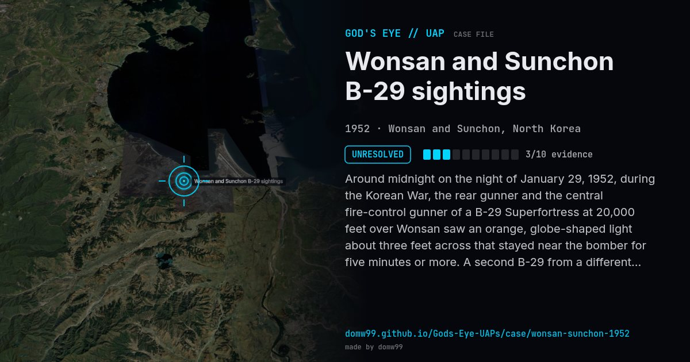

Wonsan and Sunchon B-29 sightings

Around midnight on the night of January 29, 1952, during the Korean War, the rear gunner and the central fire-control gunner of a B-29 Superfortress at 20,000 feet over Wonsan saw an orange, globe-shaped light about three feet across that stayed near the bomber for five minutes or more. A second B-29 from a different squadron, hundreds of miles away at Sunchon, reported a lighted orange sphere that followed it for about a minute on the way back to base. The two reports were made independently by trained aircrew over hostile territory, and the story was widely published in February 1952. Air Force UFO experts have argued that the wide publicity it received helped feed the 1952 wave, which ended over Washington, D.C.
Explanation
No explanation was ever settled. Air Force Lt. Gen. Otto Weyland said that “we can’t say there’s nothing to it” but that without more data a conclusive answer could not be expected, and he doubted that jet aircraft were responsible.
What was seen
Shape: Orange sphere or disc, with occasional blue flames
Witnesses: Two B-29 crews from different squadrons
Duration: Five minutes or more at Wonsan; about a minute at Sunchon
Sources
- Wikipedia — Wonsan-Sunchon UFO incident
- NICAP — Korea, 29 January 1952 (case index)
- UFOs at close sight — U.S. military reports, Korea, 29 January 1952
Browse
- 1950s
- Unresolved
- Military encounters
- Military witnesses
- Pilot and aircrew witnesses
- Spheres and orbs
- Discs and saucers